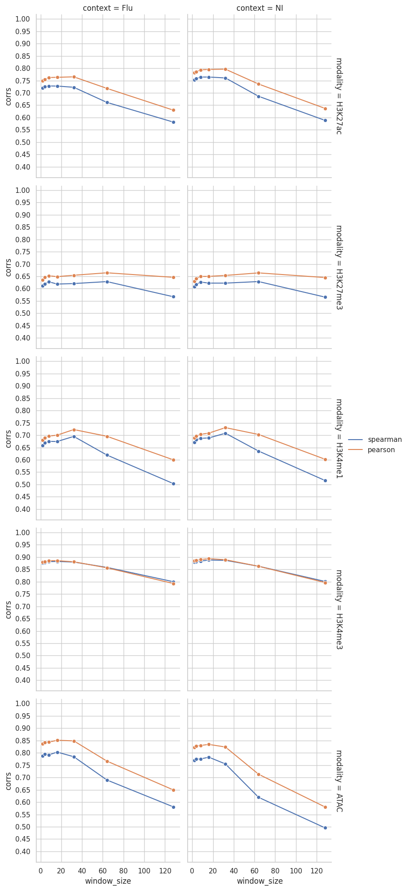

Code
import os,sys
import numpy as np
import matplotlib.pyplot as plt
import pandas as pd
import json
import subprocessimport os,sys
import numpy as np
import matplotlib.pyplot as plt
import pandas as pd
import json
import subprocesspath_to_project_dir = "/beagle3/haky/users/saideep/projects/Con_EnPACT/models"
modality_pcs = {
"H3K27ac":{
"Flu":1,
"NI":1
},
"H3K27me3":{
"Flu":2,
"NI":1
},
"H3K4me1":{
"Flu":4,
"NI":2
},
"H3K4me3":{
"Flu":2,
"NI":2
},
"ATAC":{
"Flu":3,
"NI":3
}
}
window_sizes = [2,4,8,16,32,64,128]corr_tables = []
for modality in modality_pcs.keys():
for context in ["Flu","NI"]:
for window_size in window_sizes:
cur_proj_dir = os.path.join(path_to_project_dir,context+"_"+modality+"_ws"+str(window_size))
cur_corr_table = pd.read_csv(os.path.join(cur_proj_dir,"intermediates","evaluate_training","corrs_df_for_subsets.tsv"), sep="\t")
cur_corr_table["modality"] = modality
cur_corr_table["context"] = context
cur_corr_table["window_size"] = window_size
corr_tables.append(cur_corr_table)
corr_table_all = pd.concat(corr_tables)
corr_table_all.head()| data_subset | cor_id | cor_type | corrs | modality | context | window_size | |
|---|---|---|---|---|---|---|---|
| 0 | train | EnPACT_pred_vs_ground_truth | spearman | 0.763115 | H3K27ac | Flu | 2 |
| 1 | train | log2_epi_ref_track_vs_ground_truth | spearman | 0.437594 | H3K27ac | Flu | 2 |
| 2 | train | EnPACT_pred_vs_ground_truth | pearson | 0.788496 | H3K27ac | Flu | 2 |
| 3 | train | log2_epi_ref_track_vs_ground_truth | pearson | 0.439296 | H3K27ac | Flu | 2 |
| 4 | valid | EnPACT_pred_vs_ground_truth | spearman | 0.719843 | H3K27ac | Flu | 2 |
import seaborn as sns
import matplotlib.ticker as ticker
sns.set_theme(style="whitegrid")
corr_table_enpact = corr_table_all[corr_table_all["cor_id"]=="EnPACT_pred_vs_ground_truth"]
min_corr = corr_table_enpact["corrs"].min() - 0.1
max_corr = corr_table_enpact["corrs"].max() + 0.1
for data_subset in ["valid"]:
corr_table_enpact_subset = corr_table_enpact[corr_table_enpact["data_subset"]==data_subset]
fg = sns.FacetGrid(data=corr_table_enpact_subset, col="context", row="modality", margin_titles=True, height=4, aspect=1)
fg.map_dataframe(sns.lineplot, x="window_size", y="corrs", hue="cor_type", palette="deep", marker='o').add_legend().set(ylim=(min_corr,max_corr))
for ax in fg.axes.flat:
ax.yaxis.set_major_locator(ticker.MultipleLocator(0.05))
corr_table_enpact_smwindow = corr_table_enpact[corr_table_enpact["window_size"]<32]
for data_subset in ["valid"]:
corr_table_enpact_smwindow_subset = corr_table_enpact_smwindow[corr_table_enpact_smwindow["data_subset"]==data_subset]
fg = sns.FacetGrid(data=corr_table_enpact_smwindow_subset, col="context", row="modality", margin_titles=True, height=4, aspect=1)
fg.map_dataframe(sns.lineplot, x="window_size", y="corrs", hue="cor_type", palette="deep", marker='o').add_legend().set(ylim=(min_corr,max_corr))
for ax in fg.axes.flat:
ax.yaxis.set_major_locator(ticker.MultipleLocator(0.05))

corr_table_enpact_atac = corr_table_enpact[corr_table_enpact["modality"]=="H3K4me3"]
corr_table_enpact_atac[corr_table_enpact_atac["window_size"]==4]| data_subset | cor_id | cor_type | corrs | modality | context | window_size | |
|---|---|---|---|---|---|---|---|
| 0 | train | EnPACT_pred_vs_ground_truth | spearman | 0.903147 | H3K4me3 | Flu | 4 |
| 2 | train | EnPACT_pred_vs_ground_truth | pearson | 0.910854 | H3K4me3 | Flu | 4 |
| 4 | valid | EnPACT_pred_vs_ground_truth | spearman | 0.878218 | H3K4me3 | Flu | 4 |
| 6 | valid | EnPACT_pred_vs_ground_truth | pearson | 0.882030 | H3K4me3 | Flu | 4 |
| 8 | test | EnPACT_pred_vs_ground_truth | spearman | 0.874550 | H3K4me3 | Flu | 4 |
| 10 | test | EnPACT_pred_vs_ground_truth | pearson | 0.882604 | H3K4me3 | Flu | 4 |
| 0 | train | EnPACT_pred_vs_ground_truth | spearman | 0.906249 | H3K4me3 | NI | 4 |
| 2 | train | EnPACT_pred_vs_ground_truth | pearson | 0.913789 | H3K4me3 | NI | 4 |
| 4 | valid | EnPACT_pred_vs_ground_truth | spearman | 0.881794 | H3K4me3 | NI | 4 |
| 6 | valid | EnPACT_pred_vs_ground_truth | pearson | 0.887225 | H3K4me3 | NI | 4 |
| 8 | test | EnPACT_pred_vs_ground_truth | spearman | 0.872527 | H3K4me3 | NI | 4 |
| 10 | test | EnPACT_pred_vs_ground_truth | pearson | 0.882037 | H3K4me3 | NI | 4 |